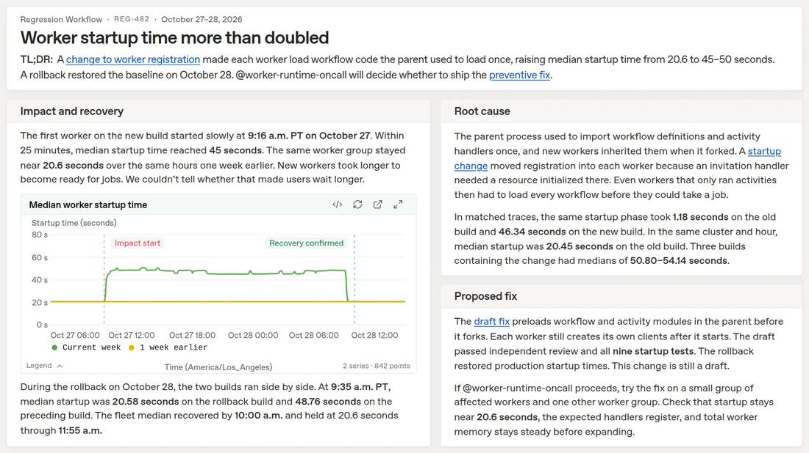
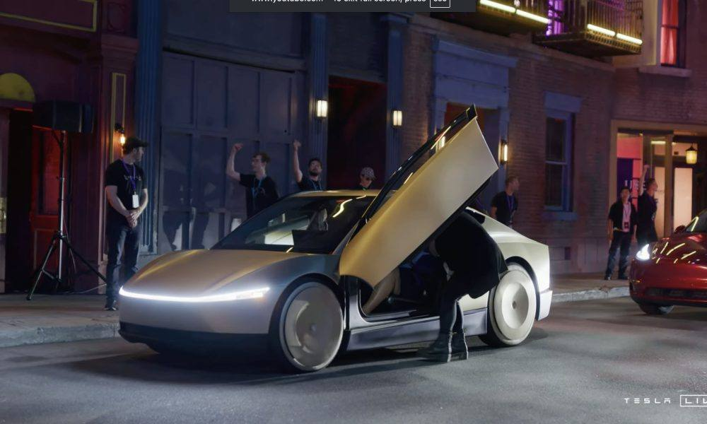
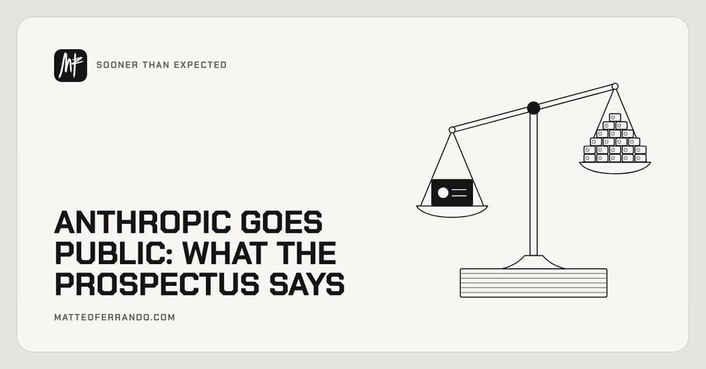

Facts first
Reporting and analysis are kept apart on every page. Sources and uncertainty are stated, not buried.

OpenAI revealed its internal Performance Factory on November 19, 2026, a Codex-powered system that automates the full loop of investigating and fixing ChatGPT performance regressions, from alert to verified recovery. In just over three months the Regression Workflow tracked more than 1,700 investigations and identified root causes in over 600 cases, averaging 17 automated investigations a day. A separate Codex session adversarially reviews each diagnosis, sending about 25% back for more work. Fixes lag diagnosis: around 400 proposed fixes, about 50 shipped fixes influenced by agent suggestions, and 15 exact Codex pull requests merged as written.
 Anthropic Slides Toward Its IPO Price on Day Two as the AI Trade Keeps FallingAnthropic shares slid about 10% in premarket trading on Friday, November 20, 2026, falling toward the $83 IPO price a day after the largest IPO on record closed up 17% at $97.17. Reuters put the early premarket decline at 6% to $91.24; later snapshots from MarketWatch and Barron's showed the slide deepening to roughly $85 to $87.
Anthropic Slides Toward Its IPO Price on Day Two as the AI Trade Keeps FallingAnthropic shares slid about 10% in premarket trading on Friday, November 20, 2026, falling toward the $83 IPO price a day after the largest IPO on record closed up 17% at $97.17. Reuters put the early premarket decline at 6% to $91.24; later snapshots from MarketWatch and Barron's showed the slide deepening to roughly $85 to $87. Anthropic Greenshoe Exercised in Full, IPO Closes at $93.5 BillionAnthropic said on Friday, November 20, 2026, that its underwriters had exercised the greenshoe option in full, lifting the total proceeds from its initial public offering to roughly $93.5 billion and closing the offering. The option covered 147 million additional Class A shares at the $83 offer price, worth about $12.2 billion, on top of the $81.34 billion priced on November 18. With the separate $26 billion private placement, the full package is about $119.5 billion before fees. This flash updates flash 434, which covered the first-day close at $97.17.
Anthropic Greenshoe Exercised in Full, IPO Closes at $93.5 BillionAnthropic said on Friday, November 20, 2026, that its underwriters had exercised the greenshoe option in full, lifting the total proceeds from its initial public offering to roughly $93.5 billion and closing the offering. The option covered 147 million additional Class A shares at the $83 offer price, worth about $12.2 billion, on top of the $81.34 billion priced on November 18. With the separate $26 billion private placement, the full package is about $119.5 billion before fees. This flash updates flash 434, which covered the first-day close at $97.17. Vera Rubin Is Running in Azure, but the Preview Names No Price, Region, or DateNVIDIA announced at Microsoft Ignite on November 19, 2026 that Vera Rubin NVL72 systems are running in Azure data centers, with access to Azure virtual machines powered by them expanding through Azure's Vera Rubin preview. The announcement also brings broader Nemotron open-model support to Microsoft Foundry and new edge and Windows PC deployment options, but names no virtual machine series, region list, price, or general-availability date.
Vera Rubin Is Running in Azure, but the Preview Names No Price, Region, or DateNVIDIA announced at Microsoft Ignite on November 19, 2026 that Vera Rubin NVL72 systems are running in Azure data centers, with access to Azure virtual machines powered by them expanding through Azure's Vera Rubin preview. The announcement also brings broader Nemotron open-model support to Microsoft Foundry and new edge and Windows PC deployment options, but names no virtual machine series, region list, price, or general-availability date.
Tesla Opens Public Cybercab Rides in Dallas, Its Second City, With a Revised V1.5 CarTesla opened public Cybercab rides in Dallas on November 19, 2026, the second US city after Austin where riders can hail the purpose-built two-seat robotaxi with no steering wheel or pedals. The Dallas cars are a revised V1.5 version, with early riders spotting a Starlink dish built into the roof and a camera in the trunk lid. Tesla registered 200 more Cybercabs in Texas on November 17, its largest single-day batch, lifting the state's registered Cybercab total to 773.| WORLD & POLICY | 27 |
| MARKETS & INDUSTRY | 142 |
| AI FRONTIER | 269 |
| ROBOTICS & AI | 36 |
| WEB3 INFRASTRUCTURE | 5 |
| RESEARCH & SCIENCE | 10 |
Anthropic Slides Toward Its IPO Price on Day Two as the AI Trade Keeps FallingAnthropic shares slid about 10% in premarket trading on Friday, November 20, 2026, falling toward the $83 IPO price a day after the largest IPO on record closed up 17% at $97.17. Reuters put the early premarket decline at 6% to $91.24; later snapshots from MarketWatch and Barron's showed the slide deepening to roughly $85 to $87.Anthropic Greenshoe Exercised in Full, IPO Closes at $93.5 BillionAnthropic said on Friday, November 20, 2026, that its underwriters had exercised the greenshoe option in full, lifting the total proceeds from its initial public offering to roughly $93.5 billion and closing the offering. The option covered 147 million additional Class A shares at the $83 offer price, worth about $12.2 billion, on top of the $81.34 billion priced on November 18. With the separate $26 billion private placement, the full package is about $119.5 billion before fees. This flash updates flash 434, which covered the first-day close at $97.17.Vera Rubin Is Running in Azure, but the Preview Names No Price, Region, or DateNVIDIA announced at Microsoft Ignite on November 19, 2026 that Vera Rubin NVL72 systems are running in Azure data centers, with access to Azure virtual machines powered by them expanding through Azure's Vera Rubin preview. The announcement also brings broader Nemotron open-model support to Microsoft Foundry and new edge and Windows PC deployment options, but names no virtual machine series, region list, price, or general-availability date.Tesla Opens Public Cybercab Rides in Dallas, Its Second City, With a Revised V1.5 CarTesla opened public Cybercab rides in Dallas on November 19, 2026, the second US city after Austin where riders can hail the purpose-built two-seat robotaxi with no steering wheel or pedals. The Dallas cars are a revised V1.5 version, with early riders spotting a Starlink dish built into the roof and a camera in the trunk lid. Tesla registered 200 more Cybercabs in Texas on November 17, its largest single-day batch, lifting the state's registered Cybercab total to 773.SoftBank Plunges 16% as Anthropic's Record IPO Fails to Stop the AI Sell-OffSoftBank Group shares plunged about 16% on Friday, November 20, 2026, leading a sell-off across Asian technology stocks one day after Anthropic's record $81 billion IPO debut. Japan's Nikkei and South Korea's Kospi each fell 4.7%, with SK Hynix, Samsung, Kioxia and Advantest all down sharply, and the US technology ETF entered bear-market territory after the Nasdaq fell more than 2% overnight. Anthropic itself closed its first day up 17% at $97.17, but Commerzbank said the listing triggered rotation out of existing AI names rather than lifting them. California AG Subpoenas Nvidia Over Whether Chips or Secrets Reached ChinaCalifornia Attorney General Rob Bonta served an investigative subpoena on Nvidia on November 19, 2026, asking whether its advanced chips or confidential information may have gone to China and whether Nvidia misled investors and the public, after former CEO Jensen Huang resigned over an affair with Alice Huang, a Megaspeed executive US intelligence suspects of ties to China's Ministry of State Security. The SEC is also reportedly probing Nvidia's disclosures, and the House Foreign Affairs Committee the same day disclosed about 879,000 H200 and MI325X chips approved for Chinese companies between December 2025 and May 2026.
California AG Subpoenas Nvidia Over Whether Chips or Secrets Reached ChinaCalifornia Attorney General Rob Bonta served an investigative subpoena on Nvidia on November 19, 2026, asking whether its advanced chips or confidential information may have gone to China and whether Nvidia misled investors and the public, after former CEO Jensen Huang resigned over an affair with Alice Huang, a Megaspeed executive US intelligence suspects of ties to China's Ministry of State Security. The SEC is also reportedly probing Nvidia's disclosures, and the House Foreign Affairs Committee the same day disclosed about 879,000 H200 and MI325X chips approved for Chinese companies between December 2025 and May 2026. Intuit Sells Mailchimp for $3.68 Billion After Beating Q1 Estimates; Shares Fall 12%Intuit reported first-quarter fiscal 2027 revenue of $4.354 billion, up 12%, with non-GAAP diluted earnings per share of $2.91, beating LSEG estimates of $2.70 a share on $4.31 billion in revenue, and agreed to sell Mailchimp to Bending Spoons for approximately $3.68 billion, about a third of the roughly $12 billion it paid in 2021. Shares fell about 12% in after-hours trading after full-year fiscal 2027 revenue guidance was cut to $23.081 billion to $23.365 billion on a change to Credit Karma, while operating income and earnings guidance were reiterated.
Intuit Sells Mailchimp for $3.68 Billion After Beating Q1 Estimates; Shares Fall 12%Intuit reported first-quarter fiscal 2027 revenue of $4.354 billion, up 12%, with non-GAAP diluted earnings per share of $2.91, beating LSEG estimates of $2.70 a share on $4.31 billion in revenue, and agreed to sell Mailchimp to Bending Spoons for approximately $3.68 billion, about a third of the roughly $12 billion it paid in 2021. Shares fell about 12% in after-hours trading after full-year fiscal 2027 revenue guidance was cut to $23.081 billion to $23.365 billion on a change to Credit Karma, while operating income and earnings guidance were reiterated.
Anthropic Closes First Day at $97.17, Up 17%, After Fading From $111.50 OpenAnthropic shares closed their first Nasdaq session at $97.17 on November 19, 2026, up 17.1% from the $83 IPO price, after opening at $111.50 and touching $115.10 in early trading. The close sits about 13% below the open, on a day the Nasdaq fell 1.5% and the S&P 500 fell 1.4%. The $81.34 billion offering is the largest IPO on record, and Anthropic is the first standalone AI lab to trade publicly. This flash updates flash 433, which covered the debut open. Anthropic Opens at $111.50, Up 34%, in Record IPO DebutAnthropic shares opened at $111.50 on the Nasdaq on November 19, 2026, up 34% from the $83 IPO price, valuing the Claude maker at about $2 trillion on a fully diluted basis. The first trade printed around 11:50 a.m. ET after the opening auction, and shares rose as high as $114.99 in early trading. The $81.34 billion offering is the largest IPO on record, and Anthropic is the first standalone AI lab to trade publicly. This flash updates flashes 421 and 425, which covered the $83 pricing and the 980-million-share confirmation.
Anthropic Opens at $111.50, Up 34%, in Record IPO DebutAnthropic shares opened at $111.50 on the Nasdaq on November 19, 2026, up 34% from the $83 IPO price, valuing the Claude maker at about $2 trillion on a fully diluted basis. The first trade printed around 11:50 a.m. ET after the opening auction, and shares rose as high as $114.99 in early trading. The $81.34 billion offering is the largest IPO on record, and Anthropic is the first standalone AI lab to trade publicly. This flash updates flashes 421 and 425, which covered the $83 pricing and the 980-million-share confirmation. Google Books Blue Origin's New Glenn to Launch AI Satellites in 2029Google announced on November 19, 2026 that Blue Origin's New Glenn rocket will fly the first dedicated heavy-lift launch for Project Suncatcher in the first quarter of 2029, carrying several solar-powered satellites equipped with Google TPUs into sun-synchronous orbit. Each satellite carries roughly the computing capacity of a data center rack. The agreement is the project's first commitment to a specific vehicle and year; the contract value and satellite count were not disclosed. This flash updates stock 127, which covered the Suncatcher prototype launch on October 1, 2026.
Google Books Blue Origin's New Glenn to Launch AI Satellites in 2029Google announced on November 19, 2026 that Blue Origin's New Glenn rocket will fly the first dedicated heavy-lift launch for Project Suncatcher in the first quarter of 2029, carrying several solar-powered satellites equipped with Google TPUs into sun-synchronous orbit. Each satellite carries roughly the computing capacity of a data center rack. The agreement is the project's first commitment to a specific vehicle and year; the contract value and satellite count were not disclosed. This flash updates stock 127, which covered the Suncatcher prototype launch on October 1, 2026. Remote-Access Chip Rule Takes Effect as Federal Register Publishes ItThe U.S. Commerce Department's interim final rule closing the remote-access route to advanced AI chips was published in the Federal Register on November 19, 2026 (FR Doc. 2026-23529) and took effect the same day. Data centers anywhere in the world that supply more than 12 million aggregate TPP of computing power to companies headquartered in China, Macau or other Country Group D:5 destinations now need a licence, and exports of advanced chips to five diversion-risk countries need one too. Existing data-center arrangements have 90 days to obtain licences, and comments on the rule are due by January 19, 2027. This flash updates ISSUE 389, which covered the rule's issuance on November 16, 2026.
Remote-Access Chip Rule Takes Effect as Federal Register Publishes ItThe U.S. Commerce Department's interim final rule closing the remote-access route to advanced AI chips was published in the Federal Register on November 19, 2026 (FR Doc. 2026-23529) and took effect the same day. Data centers anywhere in the world that supply more than 12 million aggregate TPP of computing power to companies headquartered in China, Macau or other Country Group D:5 destinations now need a licence, and exports of advanced chips to five diversion-risk countries need one too. Existing data-center arrangements have 90 days to obtain licences, and comments on the rule are due by January 19, 2027. This flash updates ISSUE 389, which covered the rule's issuance on November 16, 2026.Policy, geopolitics and macro forces — the events that move the map.
OPEN DESK → · 27 REPORTS02Capital, deals and industry structure, with every number sourced.
OPEN DESK → · 142 REPORTS03Models, agents and compute — verified against primary sources before publication.
OPEN DESK → · 269 REPORTS04Humanoids, embodied AI and automation — real deployments, not demos.
OPEN DESK → · 36 REPORTS05Blockchain infrastructure and industry facts. No investment advice.
OPEN DESK → · 5 REPORTS06Papers, labs and frontier science, with the limits of each claim stated.
OPEN DESK → · 10 REPORTSOne sponsor slot per cycle across the briefing and the homepage. Pricing steps up with real traffic. Audience numbers are never inflated.
Reporting and analysis are kept apart on every page. Sources and uncertainty are stated, not buried.
Key facts link back to the publishing institution and the original document, with page screenshots on file.
Each report carries a screenshot of its primary source. One click takes you to the original.
Events, timelines and entities are linked, so a headline becomes a position in a larger picture.
We monitor official announcements, filings, wire reporting and front-line social signals, then merge duplicate coverage of the same event.
Social posts are leads, never sources. Each event is confirmed against its primary source and a second independent report before publication.
Background, timelines and related entities are attached to every event, and follow-ups are published as updates to the same record.